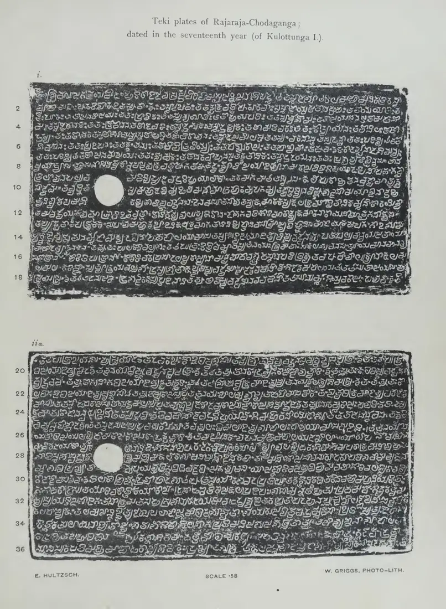
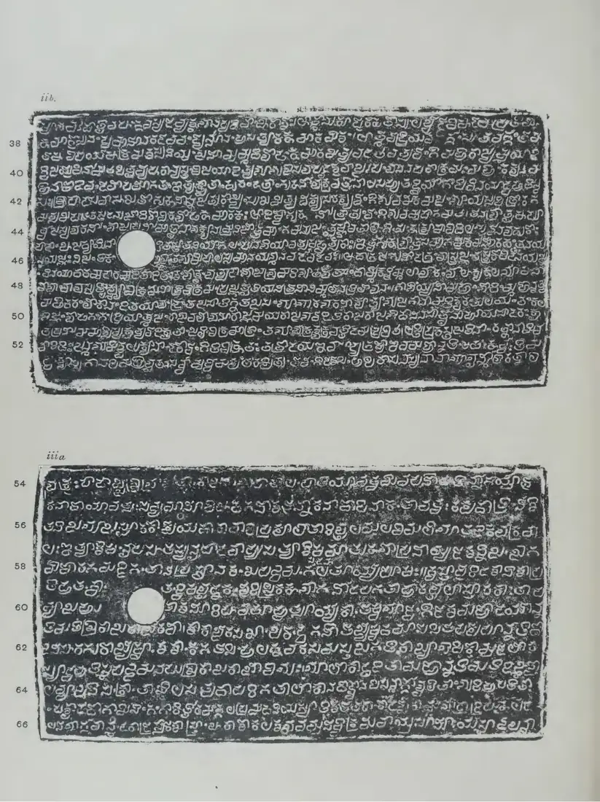
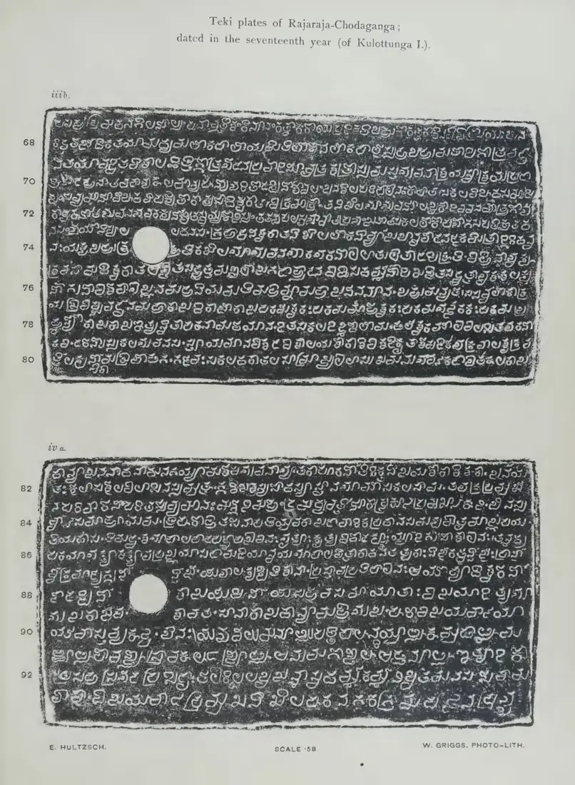
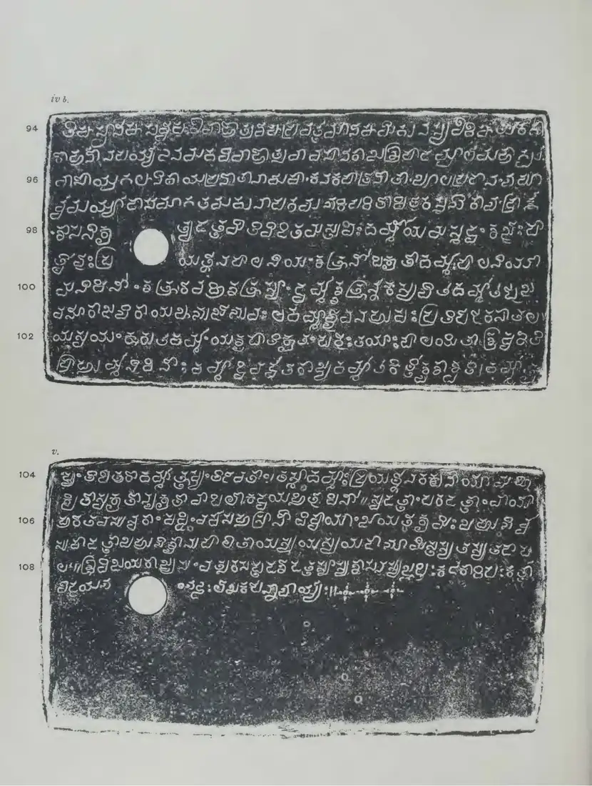

Teki Plates of Rajaraja-chodaganga ; Dated in the Seventeenth Year (of Kulottunga I.)
TEKI PLATES OF RAJARAJA-CHODAGANGA ;
DATED IN THE SEVENTEENTH YEAR (OF KULOTTUNGA I.).
DATED IN THE SEVENTEENTH YEAR (OF KULOTTUNGA I.).
By E. HULTZSCH, PH.D.
These copper plates were sent to me through the Government of Madras by the Collector of Gôdávarí, who in his letter of 30th April 1901 states that they were “ found about two months ago by one Kodi Dosigadu of Těki2 in the Rámachandrapuram táluka, while working in his field.”
The plates are five in number and measure about 11¼” in breadth and about 6” in height. The first and last plates bear writing only on the inner side, and the three middle ones on both sides. The edges of the inscribed sides are raised into rims for the protection of the writing, which is in a state of very good preservation. On the left of each inscribed side is bored a circular hole, through which passes a copper ring measuring about 6” in diameter and about ¾” in thickness. The ring had not yet been cut when I received the plates. Its ends are secured in the base of a four-petalled flower, which is surmounted by a circular seal measuring 4” in diameter. This seal bears the following emblems in high relief on a countersunk surface:—across the centre the legend śrí-Tribhuvanámkuša ; at the top a boar, standing, facing the proper left, flanked by two chaurís, and surmounted by a crescent, an elephant-goad and the sun ; and at the bottom a conch, a drum, a four-petalled flower, a flower-bud and a throne.
The alphabet is Telugu and the language Sanskrit verse and prose. The Telugu letters r and l occur in a number of Telugu names which are quoted in l. 90 f. Of graphical peculiarities I would note that in yú (ll. 54 and 90) and mú (l. 95) the vowel ú is represented by the marks for u and á.
The inscription opens with the same genealogical account of the Eastern Chálukya family as the Chellúr and Piřhápuram plates of Vira-Chôđa,3 but begins to differ in the description of the reign of Kulôttuńga I. It does not mention his queen Madhurântakí, but states that he had several queens (v. 11), who bore him several sons4 (v. 12). On one of these, Mummađi-Chôđa,— whose name is given as Rájarája in the Chellúr and Piřhápuram plates,— he conferred the governorship of Věngi after the death of his own paternal uncle Vijayáditya (VII.) (vv. 13-16). One year later (v. 17) he bestowed the same appointment on Mummađi-Chôđa's younger brother, Vira-Chôđa (v. 18), who held it for six years (v. 19), when he was recalled (v. 20). Then the eldest son, Chôđagańga, surnamed Rájarája (vv. 21-26), ascended the throne of Věngi (v. 33) in Šaka-Sainvat 1006 (in numerical words), on Thursday, the full-moon tithi of Jyaishtha, in the nakshatra Jyèshthâ and in the lagna Simña (v. 34). This date
1 The words in brackets are supplied on the strength of the Sanskrit portion of the Tirumalai inscription (A. above).
2 No. 122 on the Madras Survey Map of the Rámachandrapuram táluka of the Gôdávarí district.
3 South-Ind. Inscr. Vol. I. No. 39, and above, Vol. V. No. 10, respectively.
4 According to v. 13 of the Chellúr plates and v. 12 of the Piřhápuram plates Kulôttuńga I. had seven sons by Madhurântakí.
probably corresponds to the 22nd May A.D. 1084. At the end of the inscription (l. 108) another date is given, viz. the seventeenth year of the reign.
The above statements involve a few important changes in the pedigree and the chronology of the Eastern Châlukyas. As regards the former, the order of the sons of Kulôttuṅga I. in my Table of this dynasty1 has to be altered; for the Têki plates inform us that the eldest son was not, as I thought, Vikrama-Chôđa, Kulôttuṅga's successor on the Chôđa throne, but Chôđagaṅga. As the Chellûr and Pithâpuram plates (v. 19) state that Vîra-Chôđa had only two elder brothers, it is now clear that these were Chôđagaṅga and Mummađi-Chôđa, and that Vikrama-Chôđa was a younger brother of Vîra-Chôđa. Secondly, the dates at the end of the Chellûr and Pithâpuram plates, viz. the twenty-first and twenty-third years of the reign, respectively, cannot be referred, as was done hitherto, to the reign of Vîra-Chôđa. For, taking the date at the end of the Têki plates in the same manner as the seventeenth year of Chôđagaṅga, it would correspond to A.D. 1084 + 16-17 = 1100-01, while the Chellûr plates would fall in A.D. 1078 + 20-21 = 1098-99, and Vîra-Chôđa would thus have issued an edict during the governorship of his brother Chôđagaṅga. The only way in which the dates of the three inscriptions can be reconciled is to refer them to the accession of Kulôttuṅga I. in A.D. 1070. They would then fall in A.D. 1086-87, 1090-91 and 1092-93. The two last dates would imply that Vîra-Chôđa administrated the Vêngî province a second time in succession of Chôđagaṅga. That this was actually the case is explicitly stated in his Pithâpuram plates. We are there told that Vîra-Chôđa was recalled by Kulôttuṅga I. (v. 25), but sent to Vêngî again in the fifth year (v. 26). The occasion when he was recalled was evidently the appointment of Chôđagaṅga in A.D. 1084, and "the fifth year" must mean the fifth year after Vîra-Chôđa's recall, i.e. A.D. 1088-89. This explanation is in perfect accordance with the fact that the Têki plates are dated two years earlier, viz. in the seventeenth year of Kulôttuṅga I. = A.D. 1086-87. The fact that the Chellûr plates are silent regarding the intervening governorship of Chôđagaṅga, and that the Pithâpuram plates allude to it without mentioning his name, suggests that he had discredited himself with his father and had been on bad terms with his brother Vîra-Chôđa. The subjoined Table shows the relationship and the dates of the three successive governors of Vêngî.
• Kulôttuṅga-Chôđa I. ;
married Madhurântakî.
| Râjarâja alias | Râjarâja alias | Vîra-Chôđa ; | Vikrama-Chôđa. Three other sons. |
| Chôđagaṅga ; | Mummađi-Chôđa ; | A.D. 1078 to 1084 and | |
| A.D. 1084 to 1088-89. | A.D. 1077 to 1078. | 1088-89 to at least 1092-93. |
Chôđagaṅgadéva (l. 80), surnamed Râjarâja (l. 78), bore the traditional titles Sarvalôkáśraya, Vishnuvardhana, etc. (ll. 76-78), and (like his younger brother Vîra-Chôđa) resided at Jananâthanagarî (l. 81), which Mr. Krishna Sastri proposes to identify with the modern Râjamahêndri.2 He addresses the edict contained in this inscription to the inhabitants of the country between the Mannêru (river) and the Mahêndra (mountain) (l. 83). These must have been the northern and southern boundaries of the Vêngî province. The Mahêndra mountain is in the Gañjâm district near the Mandasa Railway Station, and the Mannêru river passes Singarâyakoṇda, now a Railway Station in the Kandukûr tâluka of the Nellore district. The king's edict does not, as usual, refer to a grant of land; it confers certain honorary privileges on the
descendants of the Teliki family (l. 92). These were subdivided into a thousand families, ten of which are mentioned by name (l. 90 f.), and were hereditary servants of the Eastern Châlukya family (v. 38 f.). They were believed to have immigrated with the mythical king Vijayâditya of Ayôdhyâ1 (v. 40) and to have settled at Vijayavâtâ2 (the modern Bezvâđa), which seems to have been the former capital of the Eastern Châlukyas (v. 41).
The Bhâvanârâyaṇa temple at Bâpaṭla bears two inscriptions (Nos. 189 and 192 of 1897), dated in Śaka-Saṅvat 1076 and recording gifts by two merchants who were members of the Teliki thousand (Teliki-vêvuru). The first of these merchants belonged to the subdivision (gôtra) of the Musunûllu, and the second to that of the Velandunûllu, who are perhaps identical with the Velumanûllu of the Têki plates (l. 90). I subjoin the beginning of the second inscription; that of the first is identical with it. It will be seen from the following transcript that this caste claims to have ruled over the towns of Ayôdhyâ and Bejavâla, with both of which it is associated also in the Têki plates (v. 40 f.).
Svasti [||*] Y[a]ma-niyama-[dharmma]-pâ(pa)râ[ya*]ṇa-[B]rahma-saṅbhba(bha)va-Manuvaṅś-[â]di-śa(sa)kala-[śâstra]-viśâraduluṅ Ganakâpuray-Ayôdhyâpura-Ga[ja]pur-âdhinâyakulu[m] satya-śauch-âbhimânulu [g]uru-dêva-pâd-ârâdhakulu Paulasti-bhagavatî-sthâna-pra[t]ishtî(shṭhi)tulu si(sa)hasra-śâkh-ânvaya-gôtrul=aina śrîma[d*]-Bejavâla-sâ(śâ)sanul=aina Teliki-vêvurayaṅndu Velaṅndunûlla gôtruṅđ=aina Sûri[se]ṭti, etc.
The composer and the writer of the Têki plates (l. 108 f.) were the same persons as in the case of the Chellûr plates (l. 114) and the Piṭhâpuram plates (l. 280) of Vîra-Chôđa.
TEXT.3
First Plate.
- 1 श्रीमा[न्]4 जगत्रयमिदं हरिरादिदेव[:*] सष्टु5 विरिचिमसृजन्निजनाभि-पद्मात् [|*] तस्मादभूत् क्लिन महामुनिरन्निरस्मा-
- 2 चूडामणिः पुररिपोरुदितस्मुधांशः6 [॥ १*] तस्माद्बुधः7 ततश्चक्रवर्ती पुरुरवा(:)स्तस्मादायुस्ततो नहु[ष]ः ततो ययतिः त-
- 3 [त]ः पूरुः ततो जनमेजयः ततः प्राचीशः ततस्मैन्ययातिः ततो हय-पतिः ततस्मार्वभौमः ततो जयसेन[स्ततो] महाभौ-
- 4 मः तस्मादैशानकः ततः क्रीधाननः ततो देवकिः तस्माद्भुकः तस्माद्-चकः ततो मतिवरः ततः कात्यायनः ततो नीलः [त]तो
- 5 दुष्यंतः ततो भरतस्ततो भूमन्युस्ततो हस्ती ततो विरोचनः तस्मादज-मीलस्तत(त)स्वंवरणस्ततस्मुधन्वा ततः परिचित् ततो
- 6 भीमसेनः ततः प्रदीपनः ततश्शंतनुः ततो विचित्रवीर्यः ततः8 पाण्डुराजः ततः पाण्डवाः तेषु वंशकरादर्ज्जनादभिमन्युः9
1 Compare l. 8 of this inscription, and the translation in South-Ind. Inscr. Vol. I. p. 58.
2 In l. 93 the same town is mentioned as Vijayavâta. 3 From the original copper plates.
4 This word is preceded by a symbol, for which see the accompanying Plate; read श्रीमाज्जगत्रय°.
5 Read सष्टु विरिचि°.
6 In the letter स्मु the vowel-sign u is attached to either s.
7 The rules of saṅdhi are not always observed in the following prose passage up to तस्माद्दयनः; (l. 7).
8 The two visargas before पाण्डुराजः; and पाण्डवाः; have been entered subsequently.
9 Read °दर्ज्जना°.
7 ततः परिक्षित् ततो जनमेजयः ततः क्षेमुकः ततो नरवाहनस्ततश्श-
तानोकः तस्मादुदयनः [*] ततः प्रभृत्यविच्छिन्न[सं]ता[ने]-
8 ष्वयौध्यासिंहास[न]ासी[ने]ष्वेकान्नषष्टिचक्रवर्त्तिषु गतेषु तदंश्यो विजयादित्यो
नाम राजा विजिगीषया दक्षिणापथं गत्वा
9 त्रिलोचनपल्लवमधिक्षिप्य दैवदुरीहया लोकांतरमगमत् [*] तस्मिन्
संकुले पुरोहितेन वृद्धामात्यैश्च
10 सार्द्धमंतर्ब्बन्नी तस्य महादेवी 1 मुडिवेम[न]ामाग्रहारमुपगम्य तद्द[त]स्तव्येन
विष्णुभट्टसोमयाजिना दुहि-
11 तृनिर्ब्बिशेषमभिरक्षिता 2 विष्णुवर्द्धनं नंदनमसूत [*] सा च तस्य
कुमारकस्य कुलक्रमोचितानि कर्म[त]णि कारयित्वा
12 तमवर्द्धयस[त्]3 च मात्रा विदितवृत्तांतो निर्गल्य चलुक्यगिरौ नंदाभगवतीं
गौरीमाराद्ध्य कुमारनारायणमातृगण[ंश्च] सं-
13 तप्यर्थं श्वेतातपत्रैकशंखपंचमहाशब्दादीनि कु[ल]क्रमागतानि निक्षिप्तानोव
साम्राज्यचिह्नानि समादाय कडंबगंगादिभूमि-
14 पात्रिर्निज्जित्य4 [से]तुनर्मदामध्यं दक्षिणा[प]थं पालयामास [*] तस्यासी-
द्विजयादित्यो विष्णुवर्द्धनचूपतेः5 [*] पल्लवान्वयज[त]ाताया
15 म[ह]ादेव्याश्च नंदनं6 [*] २*] तत्सुतः पुलकेशिवल्लभः [*] तत्पुत्रः
कीर्त्तिवम्मा7 [*] [त]स्य तनयः श्रीमतां सकलभुवनसंस्तूयमानमानव्य-
16 सगोत्रोणां8 हारीतिपुत्रोणां9 कौशिकीवरप्रसादलब्धराज्यानामश्वमेधाव[भ]-
य[स्त्र]ानपवित्रीकृतवपुषां चालुक्याना10 कुलम-
17 (लम)लंकरिष्णोंस्त्रित्याश्रयवल्लभेंद्रस्य11 भ्राता कुञ्जविष्णुवर्द्धनोष्टादश वर्षाणि
वंगीदेशमपालयत् [*] तत्सुतो जयसिंह[व]-12
18 ल्ल[भ*]स्त्रयस्त्रिंशतम् [*] [त]दनुज इंद्रभट्टारकस्सम दिनानि [*] तत्सुतो
वि[ष्णु]वर्द्धनो नव वर्षाणि [*] तत्सूनुर्मगियुवराजः पंचविंशतिं13 [*]
Second Plate; First Side.
19 तत्पुत्रो जयसिंहस्त्रयोदश [*] तदवरजः कोक्लिष्पणमासान् [*]
तस्य भ्राता विष्णुवर्द्धनस्तमुच्च[त]य्य समत्रिंशतं [*] तत्पुत्रो
1 The four other published inscriptions which contain this passage read मुडिवेमु.
2 Read विष्णु. 3 Read °यत् । स च. 4 Read °पात्रिर्निज्जित्य.
5 Read °भूपतेः. 6 Read नंदनः. 7 Read °वर्मा.
8 Read °सगोत्राणां. 9 Read °पुत्राणां.
10 Read °नां. 11 Cancel the anusvāra after ष्णी.
12 The व at the end of this line and the ल्ल at the beginning of the next were added subsequently.
13 The anusvāra of तिं is repeated at the beginning of the next plate.
20 विजयादित्योष्टादश [*] तत्तनयो 1 विष्णु[व]ईन[ष्प]ट्रिंशतम् [*]
तत्सुतो नरेंद्रमृगराजोष्टाचत्वारिंशतं2 [*] तत्सुतः कलिविष्णुवईनो-
21 ध्यईवर्ष [*] तत्सुतो गुणगविजयादित्यश्चतुश्चत्वारिं[श*]तम्3 [*] तद्भ्रा-
तुर्व्विक्रमादित्यस्य तनयश्चालुक्यभीमस्त्रिंशतं [*] तत्सुतः को-
22 ल्ल[वि]गण्डविजयादित्यष्पण्मासान् [*] तत्सुतोम्बराजस्सम् [*] तत्तनय
बालमुच्चाद्य ताडपो मासमेकं [*] तं जित्वा विक्रमादित्य [ए]कादश
23 मासान् [*] ततस्ताडपराजसुतो युद्धमल्लस्सम् [*] तमु[च्च]ाद्य देशादम्-
राजानुजो राजभीमो [द्व]ादश [*] तत्सूनुरम्बराजः पंचविंशतिं [*]
तस्य
24 दैमातुरो दाननृपस्त्रीणि [*] ततस्समविंशतिवर्षाणि दैवदुरीहया
वेंगीमहिरनायिका[भू]त् [*] ततो 4 दानान्नवसुतश्शक्ति-
25 वर्मनृपो द्वादश ॥ ततस्तदनुजस्सम् वत्सरान् भूतवत्सलः [*] विमला-
दित्यभूपालः पालयामास मेदि[नीं] । [३*] तत्तनयो न-
26 यशाली जयलक्ष्मीधाम 5 राजराजनरेंद्रश्चत्वारिंशतमब्दा(न)नेकं च पुनर्मही-
मपालयदखिलां । [8*] यी रूपेण म[नोभ]-
27 वं विशदया काल्य[त]6 कलाना[न्निधिं] भोगेनापि पुरंदरं विपुलया7
लक्ष्म्या च लक्ष्मीधरं [*] भोमं भीमपराक्रमेण विहसन्
28 भाति स्म भास्वद्यशा[:*] श्रीमत्सोमकुलैकभूषणम[णि]र्द्दीनैकचिंतामणिः ।
[५*] राजासावनुरूपरूपविभवाममंगना-
29 म्ना भुवि प्रख्यातामुपयच्छति स्म विधिवद्देवीं जगत्पावनीं [*] या
जङ्गीरिव ज[त] ज्ञवी हिमवतो गौरीव लक्ष्मीरिव क्षी-
30 रीदाह्विसेशवंशतिलकाद्राजेंद्रचोडादभूत् । [६*] पुत्रस्तयोरभवदप्रति[घ्रा]त-
शक्तिं8 निश्शेषितारिनिवहो महनीयकीर्तिः [*]
31 गंगाधराद्रिसुतयोरिव कार्तिकेयो राजेंद्र[चो]ड इति राजकुलप्रदोपः ।
[७*] भासामुन्नतिहेतुं प्रधमं9 वेंगीश्वरत्वम-
32 ध्यास्य [*] यस्तेजसा दिगंतानाक्रमत सहस्रभानुरुदयमिव । [८*]
उद्यच्चण्डतरप्रतापदहनप्लुष्टाखिलद्वेषिणा सर्व्वान् के-
33 रत्नपा[ण्ड्य]कुंतलमुखान्निर्जित्य देशान् बलादाज्ञ[त]10 मौलिषु भूभृतां
भयरुजा चित्तेषु दुर्म्मे[ध]सां प्रीतिस्सत्सु [दि]शा[सु]
1 The of ष्णु is expressed twice.
2 The त of °शतं is entered below the line.
3 The त्वा is entered below the line.
4 Read दानार्ष्णव°.
5 Read °नरेंद्रः । चत्वा°.
6 Read कांत्या.
7 The syllables पु and या are written on erasures.
8 Read °शक्तिनि°.
9 Read प्रथमं.
10 Read बलात् । आज्ञा.
Plate 1 is bound after this page.
Plate 2 is bound after this page.
34 की[त्ति]रतुला येनार्पितोज्जृंभते । [२*] भोगीशाभीलभोगप्रतिमनिजभुज[ा]-
भस्तितात्यंत[वि]भ्यन्नानाभूपाललो-
35 कप्रहितबहुविधा[न]ग्वरत्नाभिरामं [*] धत्ते मौलिं पराद्ध्र्यो [म]-
हति नृप[कु]ले यः कुलोत्तुंगदेवो1 देवेंद्रत्वाद-
36 नूने सुरपतिमहिमा चीडराज्येभिषिक्तः । [१०*] प्र[ख्य]ातभूभृत्कुल-
जन्मभाजस्सदाभिमुख्यस्सरसाः प्र[स]न्नाः [*] त-
Second Plate; Second Side.
37 स्याभवन् 2पात्यिवपुंगवस्य देव्यश्शुभा नद्य इवांबुराशेः । [११*]
आत्मानुरूपैर[थ] त[ा]सु लब्धैदेवीषु3 देवप्रति[म]ः
38 कुमारैस्स4 नंद्यमानो नरदेववंद्यैर्नूनं 5हसत्योककुमारमीशं । [१२*]
आत्मेवेद्रियवर्गं6 सुतवर्गं तेषु
39 तेषु वि[ष]येषु [*] क्रमशस्स नियंजानो मुम्मडिचोडं कुमारमित्यवदत्
[॥ १३*] वत्स वेंगीमहीराज्यम्मया [दि]-
40 ग्विजयैषिणा [*] मत्पितृव्ये पुरा न्यस्तं विजयादित्यभूभुजि [॥ १४*]
स चं7 पंचदशैवाच्च[ा*]न् पंचाननपराक्रमः [*] महीं रक्षन् म-
41 हीनाथो दिवं देवोपमो गतं8 [॥ १५*] इत्युद्धा तां धुरं दत्तां
गुरुणा चक्रवत्तिंना [*] असह्यतद्वियोगोपि विनयाद्दहति [स्म]
42 सः । [१६*] श्रीपादसेवासुखतो गुरुणान्न9 जातु राज्यं सुखमित्यवेच्य
[*] संरक्ष्य वेंगीभुवमेकमच्चं भूयस्स पित्रोरग-
43 मत्समीपं । [१७*] ततस्तदतुजो धीरो वीरचोडकुमारकः [*] आदिष्टो
गुरुणा त्रातुं वेंगीभुवमुपागमत् । [१८*] तेन भ्रातृषु पू-
44 व्जस्य चरणांभोज[प्र]णामात्यिंना भक्त्यानम्ननिजोत्तमांगमनुजं तृणाव
तालिंगितुं [*] शश्रूषाविधिलंपटेन च गुरोः
45 पादांबुजध्यायिना नीतास्तातनियोगलंघनभिया वत्सेन10 षड्सराः । [१९*]
इत्यं गुरुभ्रातृसमागमैकमनोरथं तं11 तनय-
46 नयज्ञः [*] निजांतिकं निर्जितभूमिपालस्समानयन्मानवदेवदेवः ॥ [२०*]
12अधाग्रजं गु[णो]दयं शास्त्रज्ञं शस्त्रकोविद13 [*] नयज्ञं14
1 The word देवी is entered below the line.
2 Read पात्यिव०.
3 Read लब्धैदेवीषु.
4 Read कुमारैः । स.
5 Read हसत्येक०.
6 Read °वेंद्रिय०.
7 Read स च; the च of पंच is entered below the line.
8 Read गतः.
9 Read गुरुणां न.
10 The न is entered below the line.
11 तं is entered below the line. 12 Read अथा०.
13 Read °कीविदं.
14 The anuvodra stands at the beginning of the next line.
47 विनयाधारमुदारमुदितोदितं1 । [२१*] 2शंभोश्चुंचत्यदांभोजभमरीभूतचेतसं
[*] धार्म्मिकन्निर्मलाचारं3 चालुक्यकुलभूष[णं] [॥ २२*]
48 वाचां वाचस्पतिं4 लक्ष्या विक्रमेण त्रिविक्रमं [*] प्रज्ञातृतीयनेत्रेण
निर्मलेन त्रिलोचनं । [२३*] गमभीर्येण5 महांभोधिं6 महोन्नत्य[१]
49 महीधरं [*] लोकानंदितया7 चंद्रं तेजसा8 तिग्नतेजसं [॥ २४*]
भूभारभरणक्षांत्या भुजगानामधीश्वरं [*] तुलयंतं कल[१]-
50 भिज्ञं चोडगंगं प्रियात्मजं [॥ २५*] राजीवलोचनो राज्ञामयं रा[जा]
भवेदिति [*] राजराज[१]भिधानेन सार्थेनाह्य सादरं9 [॥ २६*]
क्ष-
51 तप्रणाममा[श्चि]ष्य क्षत्यवेदी क्षतांजलिं [*] विक्रमाक्रांतभूचक्रश्चक्रवर्तीदम-
ब्रवीत् । [२७*] अस्ति प्रशस्तज[१]तीनां रत्नानामिव
52 वारिधिः [*] जन्मभूमिश्चलुक्यानां देशो वेंगीति वि[श्रु]तः [॥ २८*]
तत्रोदय इवासाय य[हा] इव महोन्नतिं [*] अधःकुर्व्वःति10 म-
53 [द्वं]श्यास्तुंगानपि महीचृतः11 । [२९*] सर्व्वांसुर्व्वीमक्षंतं12 रक्षितुं ते वेंगी-
देशे सिंहपी[ठ]ासनस्य [*] नानाभूभृन्मौलिरत्नालि-13
Third Plate; First Side.
54 चक्रैः पादाबन्धीर्भाजतां राजराज । [३०*] पातालं पाति यावत्प्रसिद्धमिव14
पण्पितिर्नागयूयै-
55 कनाधी15 यावत्प्रसिद्धमानो विबुधगणशतैर्नाकनाधोपि16 नाकं [*] तावत्प्रसिद्धः17
रक्ष धात्रीं निशि-
56 18 तनिजभूजस्फारकौचेयधारावारिप्रक्षालितारिच्छलमलविमलीभूतदिकचक्रवा-19
57 लः [॥ ३१*] इत्याशिषं नृपसुतस्य नृपादवाप्य सत्याशिषस्तदनृ20
मातुरुभौ प्रणम्य [*] देशन्निजं जिग-
58 मिषोरगमहिगंतान् प्रस्थानशंखपटुमंगलतूर्यधोषः ॥ [३२*] ध्वस्ता वैरि-
दशानिशा प्र-
1 The anusvāra is expressed twice.
2 Read °शुंभं.
3 Read °कन्नि.
4 The ल is entered below the line.
5 Read गांभीर्येण.
6 Read मही.
7 The anusvāra of चं is expressed twice.
8 Read तिग्म.
9 The anusvāra is corrected from a visarga.
10 Read °कुर्व्वति.
11 Read °भृतः.
12 Read °मक्षतं.
13 Read °भृन्मौलि.
14 Read यावत्प्रसिद्ध फणि.
15 Read °नाथी यावत्प्रसिद्ध.
16 Read °नाथोपि.
17 Read तावत्प्रसिद्ध.
18 Read °भुज.
19 Read °दिक्चक्र.
20 The aksharas सदनु are entered below the line.
59 तिहतं ध्वांतं द्विषच्छद्गकं1 वैरिस्त्रीककुभांगणादपगता हारच्छलास्तारकाः
[*] ताप-
60 व्याजहुताशनो रिपुवधूहृत्सूर्यकांतेष्वभूद्देगीदेशमहोदयोन्न-
61 तिमति श्रीराजराजे रवी । [३३*] शाकाब्दे रसखांबरेंदुगणिते ज्येष्ठेध
मासे सिते पक्षे पूर्वतिधौ3
62 दिने सुरगुरोर्ज्येष्ठां शशांके गते [*] सिंह4 लग्नवरे समस्तजगतीराज्या-
भिषिक्तो मुदे लोक-
63 स्योद्दहति स्म पट्टमनघ[:*] श्रीराजराजो विभुः । [३४*] भूलोकादुदिता
महोन्नतिमतो दिझण्ड-
64 लव्यापिनी संक्रांताखिलसत्यधा5 परिगता लोकानधीर्द्धानपि6 [*] सन्मार्गा-
क्षलितां भुवीह पतितां7
65 पश्चादधोगामिनीं गंगां कीर्त्तिरमंगलप्रमधनी8 यस्यातिशेतेतरां [॥ ३५*]
कोदण्डे रामभद्राद्रिपुकुलद-
66 लने भार्गवान्मदराद्रेस्सारे शास्त्रांबुराशी कलशभवमुनेर्विक्रमे वायुसूनोः
[*] यस्माद्बन्धा-
Third Plate; Second Side.
67 पसर्पप्रमथनगिलनोक्षं[घ]नावृत्तिशंकी नूनं रत्नाकरीय9 प्रदिशति बहुशो
रत्नराशीन् विचित्रान् [॥ ३६*] यः पुन-
68 रिद्धतेजोधिकतया मध्यमलोकपालीयमिति10 लोकेन लोकपालैस्सह बहुमतोपि
गोत्रवर्द्ध-
69 11 नतया वर्द्धितविशाल[की]र्त्तिर्गोत्रभेदनप्रवादिनी वृत्तशत्रीस्समस्तभुवनाश्रय[:*]
स्वाश्रयप्रदा-
70 हिनो दहनात् [*] वदान्यकुलमान्यपुण्यचरितो दक्षिणाशावलंबनशीलपरि-
पालिनः कालात् । सकलविबुधसम[ा]ज-
71 12[सं]सेव्यमानो विबुधविपक्षतो राक्ष[सा]धी[श्व]रात् । विक्रमाक्रांत-
निखिलभूभुवनो लुब्धकादिव वन[मात्र]गोच-
72 रा[द्व]रुणात् [*] 13भुवनभवरक्षणा[स्थि]त[स्थै]र्यकोटिस्संततचपलस्वभावात्
प्रभंजनात् [*] सकललोकीपभोगसपलीकृतध-14
1 Read °च्छद्गकं.
2 Read ज्येष्ठेय.
3 Read पूर्णतिधौ.
4 Read सिंहे.
5 Read °सत्यथा.
6 Read °नघीर्ध्वां°.
7 The anusvāra stands at the beginning of the next line.
8 Read °प्रमथनी.
9 Read रोयं.
10 The aksharas लोके are written on an crasure.
11 A second न is written above the न at the beginning of the line.
12 The स of सं is corrected from ज.
13 The upper stroke of the ai of स्थैयं is missing.
14 Read °सफली°.
73 नसंचयो निष्फल(ल)धनसंग्रहाद्वनेश्वरात1 [*] निखिललोकनिव्व्यांजबाभ्वो
2 दनदैकमित्राद्गिरिधन्व-
74 न: [*] यश्च बहु(अ)श्रुतिरखिलभूभुवनभारभरणलोलातुलितादपि श्रुतिविहो-
नाचक्षु[:*]-
75 अवसामधोश्वरात3 [*] अ[ख*]ण्डितसद्दृत्तम[ण्ड]लो जगदाह्लादनवि[धि]स-
धर्मणोपि खण्डितसद्दृत्ताच 4 शंशलक्ष्म-
76 णो गुणविशेषाभिज्ञ[त]नमहनोयमतिमहिम्ना महाजनेन नूनं बहुमन्यते ।
स सर्वलोकाश्च-
77 यश्रीविष्णुवर्द्धनमहाराज[त]धिराजो राजपरमेश्वर: परममाहेश्वर: परमभट्टा-
रक: परमब्र-
78 ह्यण्यो राजराज इत्यन्वितापरनामधेयानंदितसकलदिझण्डलो मंडलेश्वर-
मौलिविलसितचरणा-
79 रविंदरेणुसकलभुवनसंस्तूयमानविशदविशालयशोराशिविशदोक्ताशेषदिक्चक्रवा-
लश्चक्रव-
80 त्तिलक्षणाभिराम[:*]5 श्रीचोडगंगदेव: सकलधरातलसाम्राज्यलोलासुखमनुभवन्
कदाचित् कुलराज-
Fourth Plate; First Side.
81 धान्या6 जननाधनामनगर्यामशेषभुवनाभ्यंतरापूरणातिरिक्तनिजयशोराशिशंकां
जनय-
82 त: कैलासशैलविलासिनस्समुत्तुंग[शि]खरस्य7 सौधस्यास्थानभूमौ सकलसामंत-
चक्रप्रमुखे-
83 न8 परिवारेण परितस्मेव्यमान: म[न्ने]टिमहेंद्रमध्यवर्त्तिनो राष्ट्रकूटप्रमुखान्
9 कुटिंबिनस्स-
84 र्वान् समाह्य मंत्रिपुरीहितसेनापतियुवराजदौवारिकप्रधानसमक्षमित्यमाज्ञ[त]-
पय-
85 ति । यथा [*] संति मद्वंशभूपालपादपद्मोपजीविन: [*] भृत्या:
कृत्यविधौ दक्षा: 10 शौर्य्यादिगुणशालिन: । [३७*] तन्मध्ये
86 परया भक्त्या शक्त्या च प्रज्ञया सदा [*] मदीयान्वयभूपालचित्तारा-
धनतत्परा: [॥ ३८*] निजैरत्नैर्विजै:11 प्राणै-
1 Read °श्वरात्.
2 Read धन°.
3 Read °श्वरात्.
4 Read शश°.
5 The aksharas भिरा are entered below the line.
6 Read °धान्यां जननाथ°.
7 The aksharas शिखर are written on an erasure.
8 Read °ण.
9 Read कुटुंबि°.
10 The शौ is entered below the line.
11 Read °रत्नै°.
Plate 3 is bound after this page.
Plate 4 is bound after this page.
87 व्विक्रमाद्यैगुणैर्विर्जै1 [*] ये चालुक्यचितीशानां प्रस्तावप्रतिपालिनः
[॥ ३९*] अयो[ध्य]ाधीश्वरेणा-
88 दौ दक्षिणाशाजयैषिणा [*] ये सहैव समायाता(ः) विजयादित्यभू-
89 भुज[त] [॥ ४०*] रा[ज]वंशावतंसाना2 राजधान्या महीभुज[त] [*]
पुरो विजयवाटेया3
90 ये वास्तव्यकुटुंबिनः । [४१*] ये च वेलुमन्९९लु पत्तिपालु नरिय-
९९लु4 कुमुडा९९लु म-
91 ९९९९९९लु पोवण्ड्लु सावकुलु उण्ड्र्रु९९लु अनुमगीण्ड्लु अड्डन्९९लु
इत्यादि[कु]-
92 [ल]सहस्रभेदप्रसिद्धाः तेलि[कि]कुललब्धजन्मा[नः*]5 स्वधर्मकर्मनिष्ठितमनस-
[स्ते]षाम-
93 मीषां विजयवाटप्रमुखनिखिलपुरनगरग्रामपट्टनप्रभ-
Fourth Plate; Second Side.
94 तिषु स्थानेषु सर्वेषु विवाहोत्सवेषु प्रवर्त्तमानेषु मिधुनस्य6 वी[थी]षु
तुरगा-
95 रोहणेन पर्यंटनमध7 विवाहोत्सवावसाने राजश्रीपादमूले महागर्ध-
96 वासीयुगलु8 निथाय प्रणतानामेषां कनकपात्रेण तांबूलप्रदानं च पू-
97 र्वमर्यादा[स]मागतमधुना 9परमभक्तिपरितोषितैरस्म[त*]भिराचंद्रार्क10
98 शासनोक्तत्य दत्तमिति विदितमस्तु वः [*] धर्मोयमस्मद्दंशजैः पा-
99 र्थिवैः प्रयत्नेन पालनीयं11 [*] शत्रूणापि कृतो धर्मः पालनीयो
100 मनीषिणां [*] शत्रुरेव हि शत्रु[ः*] 12स्यांद्वर्मश्शत्रुनं कस्यचित्
[॥ ४२*] धर्मात् पैज-
101 वनो राज[त] चिराय बुभुजे भुवं13 [*] 14अधम्माच्चैव नहुषः प्रतिपेदे
रसातल15 [॥] [४३*]
102 य[ः*] स्वयं कुरु[ति] धर्मं यश्च पाति कृतं [प]रैः [*] तयाः16
पालयिता श्रेष्ठ इति
1 Read °द्यैगुणैर्विर्जैः.
2 Read °सानां.
3 Read °वाटाया.
4 The रि is entered below the line,
5 The कु of कुल is entered below the line.
6 Read मिथुनस्य.
7 Read °मथ.
8 Read °युगलं निधाय.
9 Read °भक्ति°.
10 The anusvāra stands at the beginning of the next line.
11 Read °नीयः.
12 Read साङ्°.
13 The anusvāra is corrected from a visarga,
14 Read अधर्मा°.
15 Read °तलं.
16 Read तयोः.
103 प्राहुर्मनोषिणः [॥ 88*] [ध]म्माद्विवर्द्धते राज्य1 धर्मात् कीर्त्तिश्च
शाश्वती । धर्मा[त्*] तृ-
Fifth Plate.
104 प्यंति [पित]रो धर्मात्तुषंति देवता[:] । [84*] तस्माधर्माः2 प्रयत्नेन
रक्षणीयो म[ही]-
105 क्षितो3 [।*] स्वकृतोन्यकृतो वापि लोकद्वयहितैषिणा ॥ [84*] स्वदत्तां
परदत्तां वा यो
106 हरेत वसुभ्यरां [।*] षष्टिं वर्षसहस्राणि विष्ठायां जायते कृमिः
[॥ 84*] बहुभिर्व्वं-
107 सु[ध]ा दत्ता बहुभिश्चानुपालिता [।*] यस्य यस्य यदा भूमिस्तस्य तस्य
तदा फ-
108 लं ॥ [84*] श्रीविजयराज्य[सं]वत्सर4 सप्तदशे दत्तस्यास्य शासन[स्य][।*]-
क्रमिः कटकाधिपः कर्ता
109 विद्य(मं)भट्टः लेखक[.*] पेन्नाचार्यः ॥5
TRANSLATION.
[As far as line 36 the text is identical with that of the Pithâpuram plates of Vîra-Chôda, II. 1-43; above, Vol. V. pp. 74-77.]
(Verse 11.) There were to this chief of kings (viz. Kulôttuunga I.) (many) virtuous queens, born in the families of renowned princes, always devoted to (him), full of love, (and) gracious,—as to the ocean (many) holy rivers, sprung from the ranges of lofty mountains, always running towards (it), full of water, (and) limpid.
(V. 12.) Rejoicing in the sons (kumâra) who were born (to him) in due course by these queens, who resembled him, (and) who were worthy to be worshipped by princes, this godlike (king) surely laughs at Îsa (Śiva) who has (only) a single Kumâra (Skanda).
(V. 13.) Appointing (his) sons in due order to different districts (vishaya), as the soul (directs) the senses to different objects (vishaya), he spake as follows to prince Mummañi-Chôda:—
(V. 14.) “Dear child! Being desirous of conquering the world, I formerly conferred the kingdom of the country of Vêngî on my paternal uncle, prince Vijayâditya.6
(V. 15.) “And, ruling the earth for only fifteen years, this godlike prince, who resembled the five-faced (Śiva) in power, has (now) gone to heaven.”7
(V. 16.) Out of obedience he (Mummañi-Chôda) took up that burden (viz. the kingdom of Vêngî) which (his) father, the emperor, had given him with these words, though he could not bear the separation from him.8
1 Read राज्यं.
2 Read तस्माद्धर्मः.
3 Read चिता.
4 Read वत्सरे.
5 Here follow three symbols, for which see the accompanying Plate.
6 This verse is identical with v. 13 of the Pithâpuram plates, and nearly identical with v. 14 of the Chellûr plates of Vîra-Chôda.
7 This verse is nearly the same as v. 14 of the Pithâpuram plates and v. 15 of the Chellûr plates. After it v. 15 of the Pithâpuram plates is omitted, though required by the context; see above, Vol. V. p. 95, note 1.
8 Verses 16 and 17 bear the same numbers in the Pithâpuram and Chellûr plates.
(V. 17.) “The kingdom (is) no pleasure at all (compared) with the pleasure of worshipping the holy feet of the elders;” having considered thus, he returned to (his) parents after having ruled the country of Vêngî for one year.
(V. 18.) Then his younger brother, the brave prince Vîra-Chôđa, was ordered by (his) father to protect the country of Vêngî (and) proceeded (there).
(V. 19.) Desirous of prostrating himself at the lotus-feet of the elder one among (his) brothers, thirsting to embrace the younger one whose head was bent in devotion (to him), longing to do obeisance to (his) father and meditating on (his) lotus-feet, this poor boy spent six years in fear of transgressing the command of (his) father.
(V. 20.) The politic king of kings, who had subdued (all) rulers of the earth, recalled to himself that son whose only wish was thus to be united with (his) father and brothers.
(V. v. 21-27.) Then the emperor, who knew (his) duty (and) who had conquered the circle of the earth by valour, spake as follows to (his) first-born dear son1 Chôđaganga, having affectionately addressed (him) by the name Râjarâja (i.e. 'king of kings'), which was full of meaning because (he thought that) this lotus-eyed one would become a king of kings, (and) having embraced (him) who had prostrated himself (and) had folded his hands:—
(V. 28.) “There is a country famed by the name of Vêngî, (which is) the birth-place of the noble Chalukyas, as the ocean (is) of precious pearls.
(V. 29.) “Having reached high eminence there, the members of my family overcome even mighty kings,2 as the planets, having risen in the east, surmount even lofty mountains.
(V. 30.) “While thou, Râjarâja, art seated on the lion-throne in the Vêngî country in order to protect the whole earth unopposed, may the lustre of (thy) feet be enhanced by clusters of gems in the diadems of many kings, as the beauty of the lotus by swarms of bees!
(V. 31.) “As long as the king of serpents (Śêsha), (who is) the only lord of the snake-tribe, as thou (art) the only lord of a troop of elephants, is ruling the lower world, and as long as the lord of heaven (Indra), being worshipped by hundreds of gods and demi-gods, (is ruling) heaven, so long protect thou the earth, purifying the horizon as the impurity in the shape of enemies is washed away by the water of the edge3 of the sharp, large sword in thy hand!”
(V. 32.) When the prince, having thus obtained the blessing of the king (and) afterwards the true blessings of (his) mother, (and) having bowed to both, was about to start for his country, the sound of the conches (announcing his) departure and of shrill auspicious bugles reached the ends of the quarters.
(V. 33.) When the glorious Râjarâja had ascended (the throne of) the Vêngî country, (as) the sun the eastern mountain, the night of enmity was dispelled; darkness in the disguise of foes was driven away; the stars in the semblance of necklaces disappeared from the firmament—the wives of the enemies; (and) fire in the shape of sorrow sprang up in the sun-crystals—the hearts of the wives of foes.
(V. 34.) In the Śâka year reckoned by the tastes (6), the sky (0), the atmosphere (0), and the moon (1),— (i.e. 1008)— in the month Jyaishtha, in the bright fortnight, on the full-moon tithi, on a Thursday, when the moon had joined Jyêshthâ, in the excellent lagna Siinha,— the sinless lord, the glorious Râjarâja, having been anointed to the kingdom of the whole earth, put on the tiara to the joy of the world.
1 The word agrajam occurs in l. 46 and priyâtmajam in l. 50. I omit the intervening epithets of Chôđaganga, from which we learn little more than that he was a worshipper of Śiva and “an ornament of the Châlukya family” (v. 22).
2 The words tungân=api mahtbhritah may also contain an allusion to the Râshtrakûṭas, who had the surname Tunga;’ see above, Vol. IV. No. 40, verse 6, and Vol. V. No. 20, verse 6.
3 The word dhârâ has to be taken also in the sense of ‘a stream.’
[V. 35 is identical with v. 23 of the Piṭhâpuram plates.]
(V. 36.) This ocean plentifully supplies heaps of wonderful gems,— surely1 (because it) fears a repetition of (its) bridging, retreating, stirring, swallowing and overleaping2 from him (who is) a Râmabhadra in archery, a Bhârgava in splitting hosts of enemies, a Mandara mountain in firmness, a pitcher-born sage in (absorbing) the ocean of sciences, (and) a son of the wind in prowess.
[Ll. 67-76 illustrate by a series of vyatirêkûlaînkâras that the king as regent of the middle sphere was superior to the regents of the ten directions. The pun (ślêsha) in the word dakshiṇâśâ (l. 70) is particularly amusing.]
(L. 76.) While this asylum of the whole world (Sarvalôkâśraya), the glorious Vishṇu-vardhana-Mahârâjâdhirâja, the Râjaparamêsvara, the devout worshipper of Mahêsvara, the Paramabhaṭtâraka, the very pious one, who delights all regions of the world by (his) second name Râjarâja, the dust of whose lotus-feet adorns the diadems of lords of provinces (maṇdalêsvara), who purifies the whole horizon by the great mass of (his) pure fame that is being praised by the whole world, who is distinguished by the marks of an emperor, the glorious Chôdagaṅgadêva, was enjoying the pleasure of the sport of ruling the whole earth,— once, being attended on all sides by the retinue consisting of the troop of all vassals, etc., in the darbâr hall of the palace, which had very lofty pinnacles, which possessed the splendour of the Kailâsa mountain, (and) which produced the impression of a lump of his fame that remained after the interior of the whole world had been filled (with it), at the capital of (his) family, the city (nagarî) named (after) Jananâtha,— called together all the Râshṭrakûṭas and other ryots living between the Mannêru3 (river) and the Mahèndra (mountain) and ordered as follows in the presence of the councillors, the family priest, the commander of the army, the heir-apparent, the door-keepers and the ministers :—
(V. 37.) “There are (many) servants, dependent on the lotus-feet of the kings of my family, clever in service, (and) possessing courage and other virtues.
(Vv. 38-41.) “Among them (are those who have been) always intent on pleasing the minds of the kings of my family by great devotion, strength and intelligence; who have protected the Châlukya kings at the beginning with their riches, with their lives, (and) with their courage and other virtues; who have come already at the beginning with king Vijayâditya, the lord of Ayôdhyâ, who was desirous of conquering the southern region; the ryots dwelling in the town Vijayavâṭa, the capital of the kings (who were) ornaments of the race of the Moon (Râja-vamśa);4
(L. 90.) “And who are born in the Teliki family, whose minds are intent on the performance of their duties, (and) who are known to be divided into a thousand families such as Velumanûllu, Pattipâlu, Nariyûllu, Kumudâllu, Marrûllu, Povaṇdlu, Srâvakulu, Uṇdrûllu, Anumagoṇdalu and Adḍanûllu.
(L. 92.) “Be it known to you that, being pleased by (their) great devotion, we have now granted to these people by an edict (śâsana), as long as the moon and the sun shall last, that when marriage festivals are celebrated at all places such as Vijayavâṭa and all other towns, cities,
1 The particle nûnam, ‘surely,’ introduces the figure (alaînkâra) of ‘poetical fancy’ (utprêkshâ), which in the present case pertains to a cause (hêtugâ), viz. the fear felt by the ocean, and is founded on a series of metaphors (rûpaka), viz. the identity of the king with Râma, etc.
2 These humiliating experiences the ocean had undergone successively at the hands of Râma, Paraśurâma, the Mandara, Agastya and Hanumat.
3 Mannêti is the Telugu genitive of Mannêru.
4 Compare Râja-kula-pradipa in verse 7 of this inscription, which seems to mean ‘the light of the race of the Moon,’ rather than ‘the light of the warrior-caste,’ as I had translated it in South-Ind. Inscr. Vol. I. p. 59, verse 8.
villages and hamlets (?), the married couple may proceed on the roads on horse-back, and that afterwards when, at the end of the marriage festival, they place a pair of valuable cloths at the feet of the king and prostrate themselves, betel will be given (to them) in a golden vessel, (as) handed down by old custom.
(L. 98.) “This gift must be assiduously protected by the kings descended from our family.”
[V. 42-48 contain the usual admonitions to future rulers.]
(L. 108.) The ájñapti of this edict, which was given in the seventeenth year of the prosperous and victorious reign, (was) the commander of the camp;1 the composer Viddayabhatṭa; (and) the writer Pennáchárya.
POSTSCRIPT.
Professor Kielhorn kindly contributes the following remarks on the date of the accession of Rájarája-Chôðagaṅga (above, p. 345, verse 34).
“The date is irregular for Śaka-Saṅvat 1006, both expired and current. In Śaka-Saṅvat 1006 expired the full-moon tithi of Jyaishṭha ended 15 h. 27 m. after mean sunrise of Wednesday, the 22nd May A.D. 1084, when the nakshatra was Jyēshṭhā, by the equal space system for 19 h. 3 m., by the Brahma-Siddhānta for 1 h. 58 m., and according to Garga for 6 h. 34 m., after mean sunrise. Siṅha was lagna from 4 h. 32 m. to 6 h. 41 m. after true sunrise.
“In Śaka-Saṅvat 1006 current the same tithi ended 20 h. 36 m. after mean sunrise of Friday, the 2nd June A.D. 1083, when the nakshatra by the equal space system only was Jyēshṭhā, for 8 h. 32 m. after mean sunrise (while it was Múla by the Brahma-Siddhānta and according to Garga). Siṅha was lagna from 3 h. 51 m. to 6 h. 0 m. after true sunrise.
“The date would be irregular also for Śaka-Saṅvat 1005 current and 1007 expired.”
1 With kaṭakádhipa compare kaṭakádhirája, etc.; above, Vol. IV. p. 309, note 1, and Vol. V. p. 131, last line.



